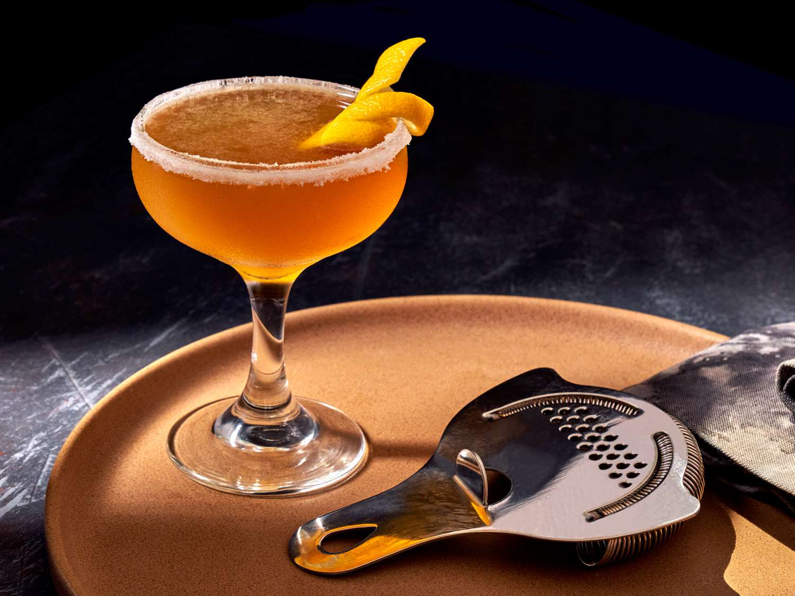

No Helmet Required
Ingrediants
- 2 ounces VSOP Cognac, Armagnac, or good California brandy
- 1 ounce Cointreau
- 3/4 ounce fresh lemon juice
- Superfine sugar, for garnish (optional)
- Orange or lemon twist, for garnish (optional)
Directions
Optional: Prepare cocktail glass by making a slit in a lemon wedge and
running the cut edge around the rim of the glass; then dip the rim in a
saucer of superfine sugar to create a thin crust. Chill the glass until
needed.
Combine brandy, Cointreau, and lemon juice in a cocktail shaker and fill
with ice. Shake well until chilled, about 10 seconds.
Strain into prepared glass; garnish with a twist of orange or lemon peel,
if the urge comes across.